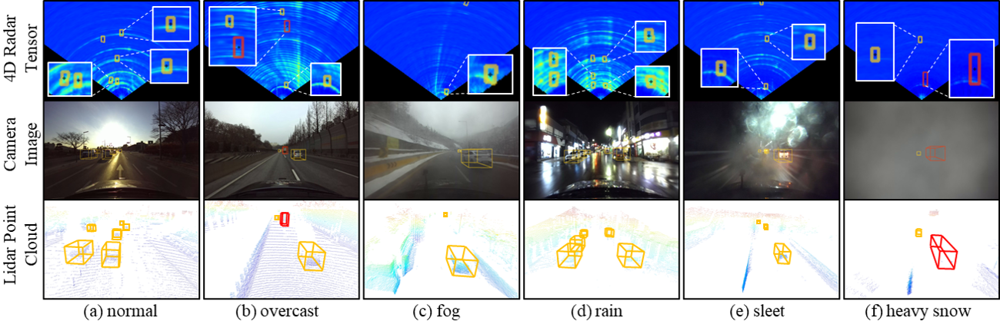

AN OPEN RESEARCH COLLECTION
Seeing beyond
clear skies.
3D Object Detection in Adverse Weather
A curated path through all-weather perception.
Find the papers, datasets, and ideas that help
autonomous systems see when conditions change.
LiDAR · Camera · Radar · V2X
PERCEPTION, IN PERSPECTIVE3D / 01
WEATHER CHANGES. THE TASK REMAINS.
Find the signal through the fog.
Interactive illustration · not sensor measurements
—curated papers & resources
10research tracks
—with code or data
THE READING ROOM
Your next discovery starts here.
Follow a question. Explore a track. Build your reading list.
/
Your reading list is saved in this browser. Export a copy to keep or share.
No matches yet.
Try a broader search or adjust your filters.
CONNECT THE DOTS
One challenge. Many ways forward.
Navigate the research pipeline, from understanding the weather to seeing together.
The best ideas often live between tracks. Papers can appear in more than one category.
FIELD NOTES
Different sensors. A shared horizon.
Understand the strengths and failure modes behind the methods.

A clearer picture, built together.
Found a paper we should include? Help the collection grow.